Gt4Research
GT: A Moldable Research Platform
Hi. My name is Oscar Nierstrasz.
Today I'd like to show you Glamorous Toolkit (or GT), an open-source environment for “Moldable Development”, and how it can be used as a platform for carrying out research.
First I'll show you how GT can be used to make software systems explainable by exposing their domain models, and augmenting domain entities with lightweight, custom analysis tools.
Then, through a series of examples, I'll show you how GT can be used as a platform to pose research questions, explore models, carry out experiments, and capture acquired knowledge through live examples.
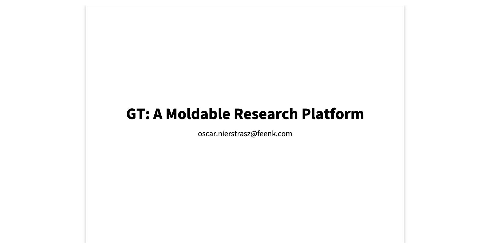
Explainable Systems
The opposite of an explainable system is an opaque one, which makes it hard for you to answer questions about how it works.
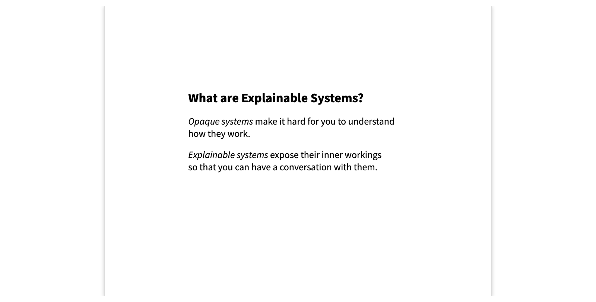
Running systems are typically opaque
A running system just shows its UI. You can interact with this, but you can't gain any insight into the inner workings of the game or its logic.
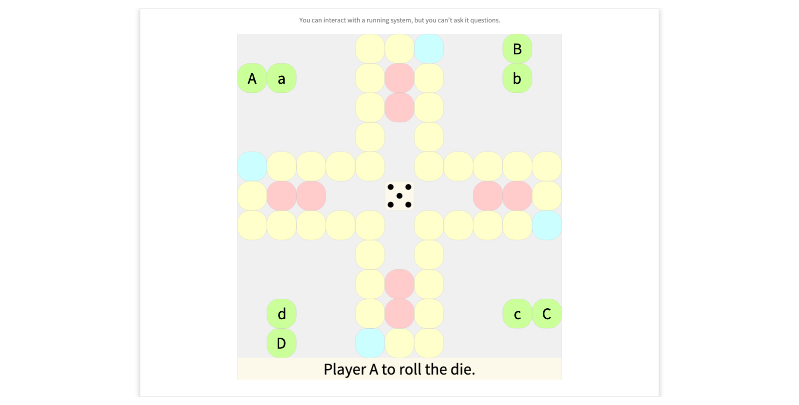
- Click on the die repeatedly, and make moves when possible.
Opaqueness
Other means of understanding opaque systems are also commonly ineffective.
Reading source code does not scale to large systems. Documentation is typically incomplete, out of date, and inconsistent with the current implementation. Generic analysis tools can be useful for answering some questions, but they rarely help you answer very specific questions that you have. Googling or using online resources typically yields many false positives, as is the case with generative AI tools.
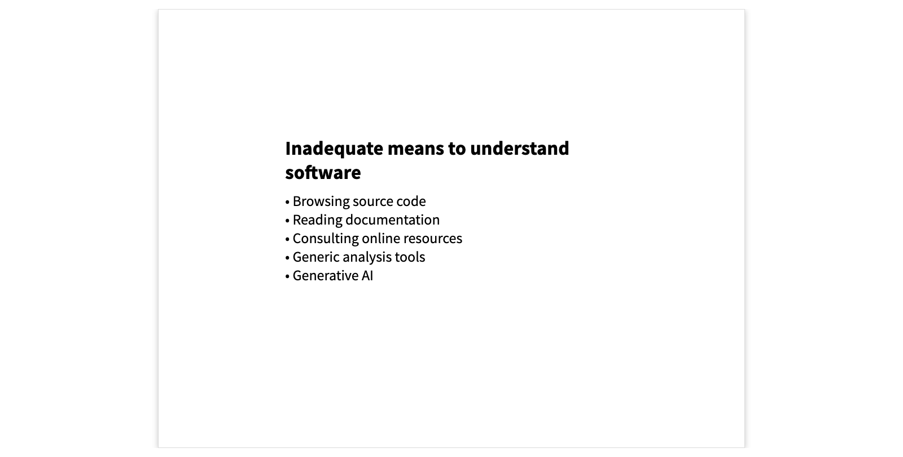
Moldable development in a nutshell
Moldable development is a methodology that makes a system explainable by extending it with numerous, inexpensive and lightweight custom tools that answer specific questions about the system and its underlying domain concepts.
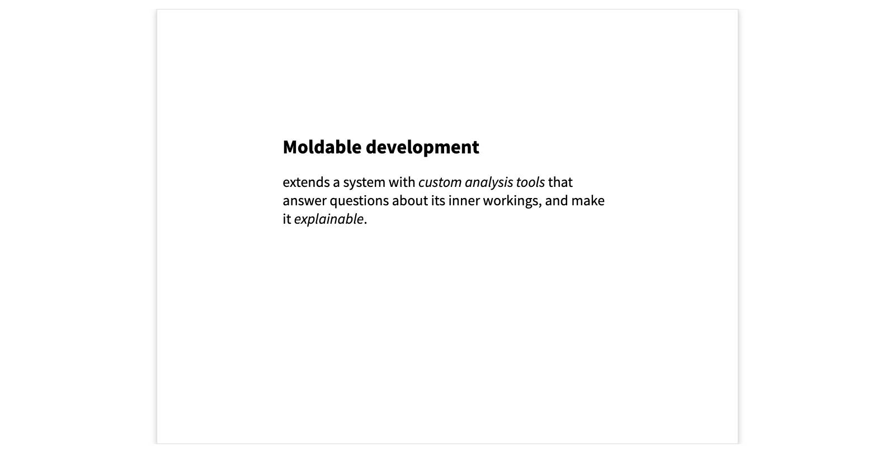
Explainable Ludo
Here we see an object inspector on a live instance of the Ludo game we saw earlier. The difference is that in addition to interacting with it, we can also explore it to understand how it works.
The usual inspector view of objects is the Raw view which only shows the state of the object's instance variables. Instead we have molded the inspector to show us several custom views that explain various aspects of the game.
We can see the state of the Players, the individual Squares, and the history of the Moves.
We can furthermore dive into a particular move, and see further custom views that explain what happened. We can even step through the moves to obtain a kind of animation of the history of the game.
Each custom tool consists of a short method that informs the inspector, or another IDE tool of the extension.
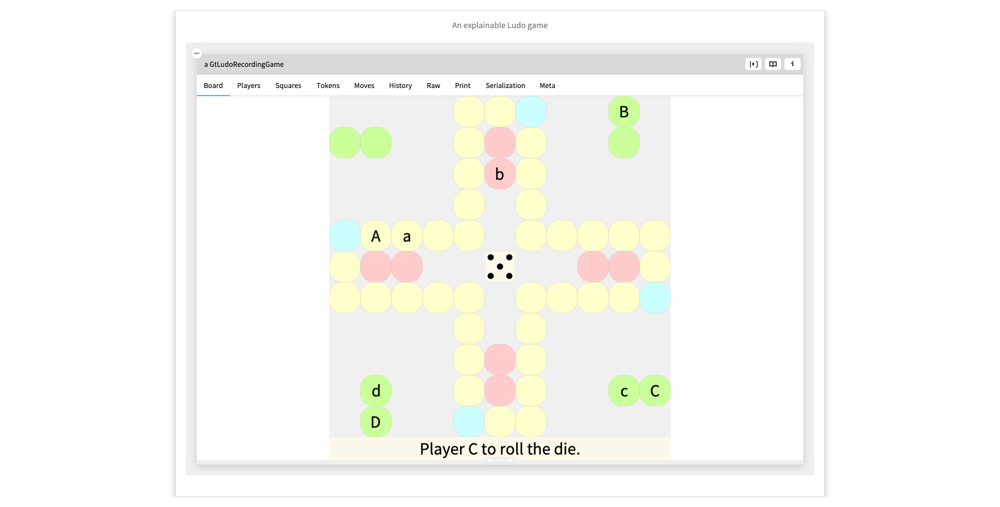
- Show the Raw view - Show the views one by one - Dive into the moves - Step through the moves - Show the code of the Moves custom view
Example: Exploring the COBOL CardDemo
The AWS CardDemo is an open source COBOL mainframe application that is available for exploring and testing various kinds of legacy modernization technologies. It can be freely downloaded from the AWS website.
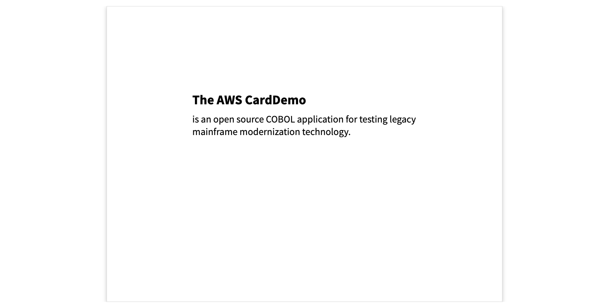
The raw CardDemo files
Here is the raw download of the files of the CardDemo. We can see there are bitmap files of the screen menus, and cobol source files, but how are they related?
There are also some diagrams, but what do they mean?
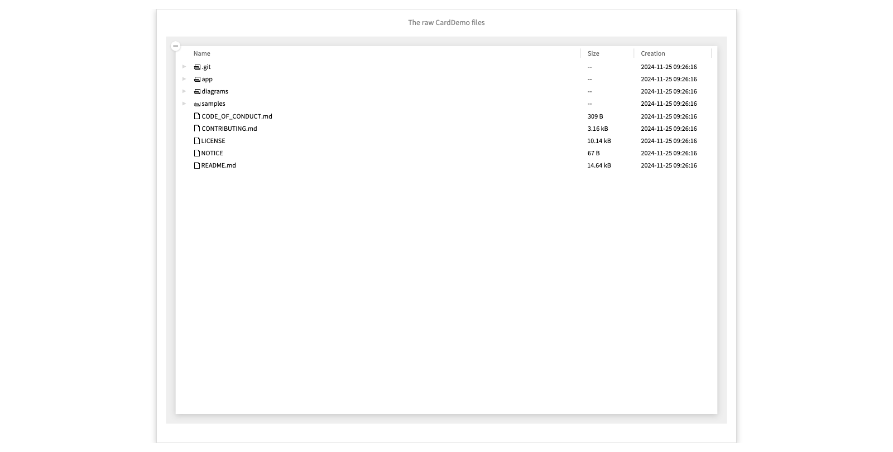
- Browse the app/cbl and diagrams folders
- Click on some of the diagrams
The wrapped CardDemo
Here we have taken the raw source files of the CardDemo and modeled the COBOL domain entities.
From a bitmap we can navigate to its source code, and the map of programs and screen, showing how we can navigate through the menus of the application.
The map is live, so we can navigate to indivudal screens and programs. From a program we can explore its source code, and from their to related entities. For example, we can inspect the individual variables, and see how their memory is allocated. (COBOL variables can have overlapping definitions.)
The central idea is to first take the raw data and wrap them as linked and explorable domain entities. Then, as we pose questions about the system, we introduce lightweight, custom tools, namely views and actions, that allow us to experiment and answer these questions.
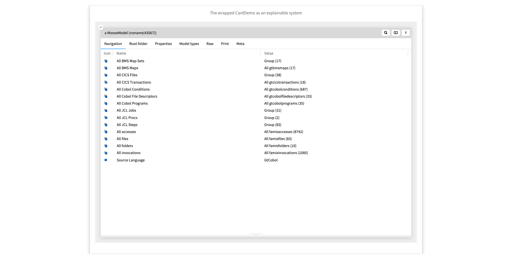
- Inspect All BMS Maps
- Click on the first screen (just to the left of the screen itself)
- Go to the `Programs & screen view to see the screen hierarchy
- Go to the first program
- Inspect the variables
- See the Overlapping view
Example: Exploring the GitHub REST API
Here's a second example where the software data is obtained through a REST API.
The GitHub REST API provides information about organizations, users and repositories in the form of JSON data.

Raw JSON data of the feenk GitHub organization
Here we see the raw JSON data of the feenk organization. It exposes a number of domain concepts, but not in a way that is easy to navigate or understand.
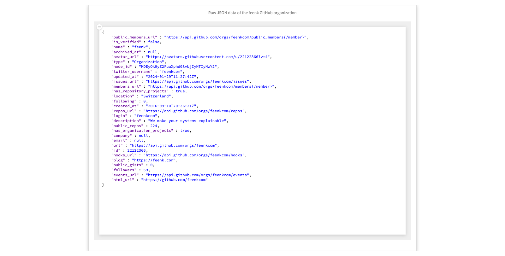
GitHub REST API demo
We demo how to apply moldable development in exploring the GitHub REST API.
First we explore the URL string to see how we can retrieve the contents. We extract the JSON string, find out haw to parse it, and retrieve a dictionary of values.
Now to explore further we turn this into a domain object representing a GitHub Organization. If we explore the basic raw view we can find the underlying data. We lift the dictionary view to make it available to our domain object as a view.
One interesting piece of data is the repos_url. We see it returns an array of JSONs, one for each repository. We extract this as a method.
We wrap each of the repo JSON dictionaries as a Repo object. We fix the default printString to show the name of the repo.
We generate a JSON dictionary view directly from the raw data of the repo.
We generate a repos view from the list of repos that now shows the proper repo names.
Now we can nicely navigate from the organization to each repository.
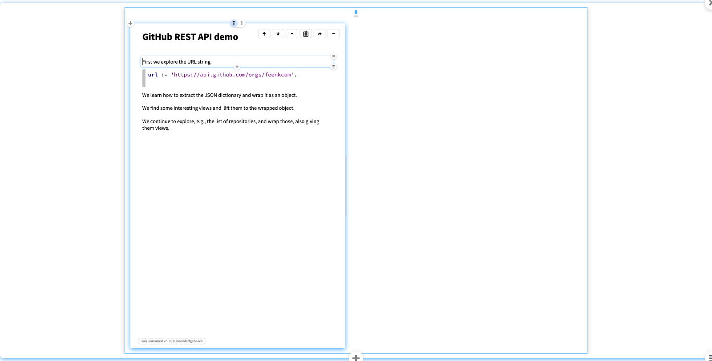
- Inspect the URL - View the contents - See how to get the contents, and add a snippet to extract this - See how to get the JSON data, and add a snippet - Wrap the dictionary as an Org object - Inspect the Org instance and navigate to the JSON view of the data - Lift the view to the org - Inspect the repos_url - Extract the array of JSONs - Wrap them as Repo objects and cache them in a repos slot - Give them a printString so they display nicely - Add JSON views to the Repo objects and continue
The feenk GitHub organization JSON as a wrapped, moldable object
After a few iterations we enrich the GitHub organization model with several more entities and views, according to whatever interests us.
We can navigate to a particular repository, such as gtoolkit-demos, browse the individual contributors to this repository, and see what kind of git events they have contributed.
We also have a couple of custom actions, for example, an action to open the repository's webiste in a browser, or to inspect the repository if it happens to be installed locally.
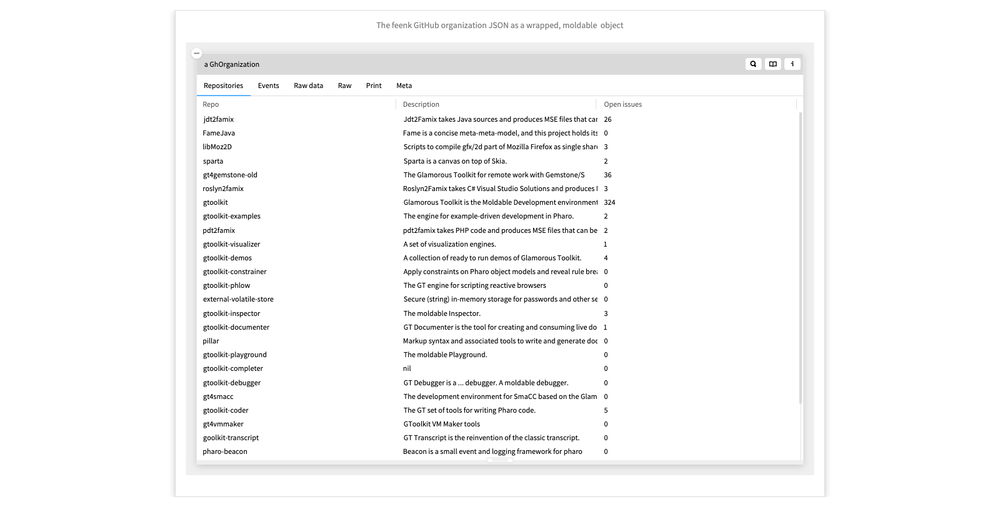
- Click through the repos - Search by name for demo - Browse Contributors and events - Click on the Open in browser and Go to repository actions
Exploring BlueSky via the AT protocol
In this example we use the AT (Authenticated Transfer) protocol to explore the BlueSky social networking service.
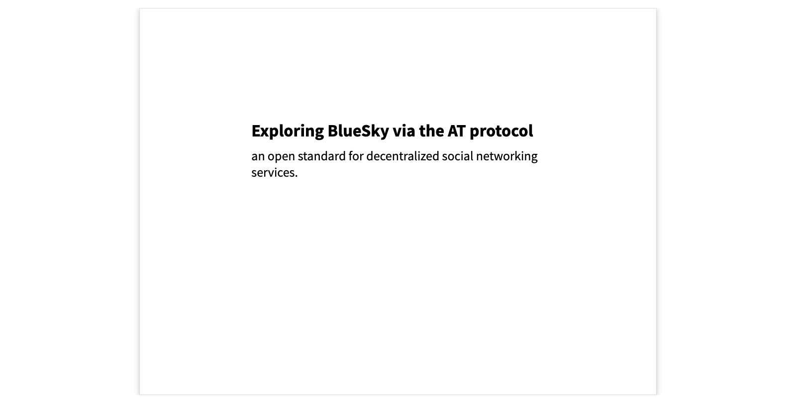
Inspecting a BlueSky user
As in the GitHub example, we use atproto to retrieve raw data from the server, which we then wrap as domain objects. By molding these objects with custom views and actions, we obtain a customizable client environment for exploring the domain.
We can also pose ad hoc queries. For example, if we explore the timeline, we can discover that we can query a post for whether it contains media. We can then use this to extract timeline posts with media.
The point is that, instead of having a fixed and closed client environment, we now have an open environment for exploring and customing the client experience.
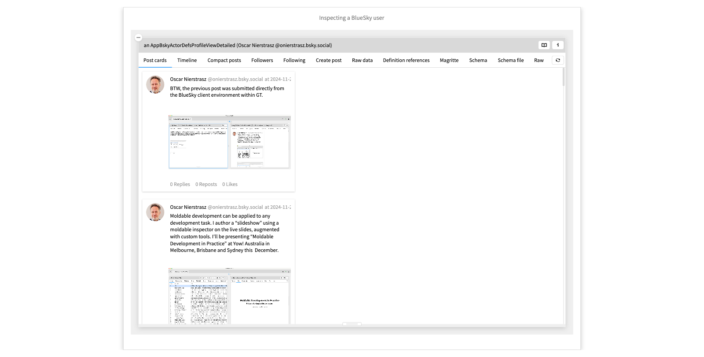
- Look at the Timeline view
- Inspect a post
- See that it has a hasMedia method
- Open the playground of the actor
- Evaluate self timelinePosts select: #hasMedia
A lexicon file
An interesting aspect of atproto is that records, event stream messages and endpoints are meta-described as so-called “lexicon” files. Here we see the JSON record for a Bluesky account profile. It has a global identifier, it describes a record type, and has properties displayName, description and avatar.
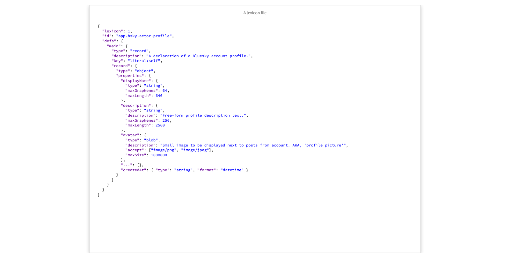
Code generated from a lexicon
Now, instead of manually coding the wrappers for the domain entities, we can apply model-driven engineering to generate many of these classes from the lexicons. Here we see the generated class for a user profile. Custom views can then be added to the generated classes as extensions defined in traits.
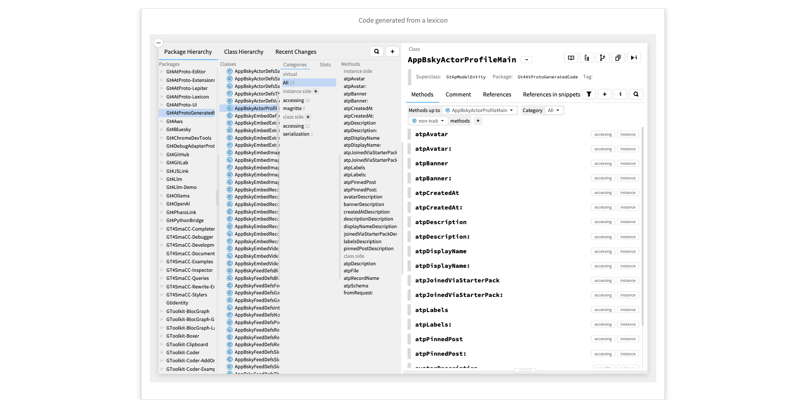
Exploring an LLM chat
In this example, we use GT as a platform for managing chats with openAI assistants. We not only want to chat with an assistant, but we want to manage the interactions and mold the experience to obtain useful results.
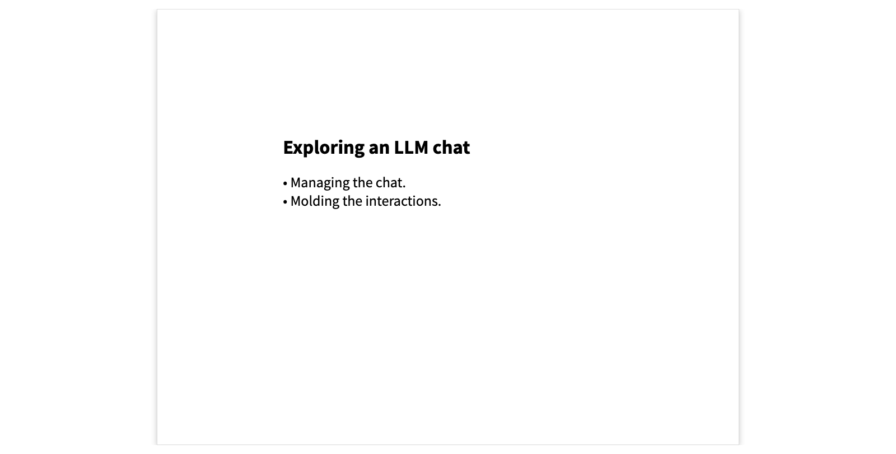
A simple chat
We can connect to an openAI assistant, and carry out a simple conversation. But this is not very interesting. We really want to control the whole experience.
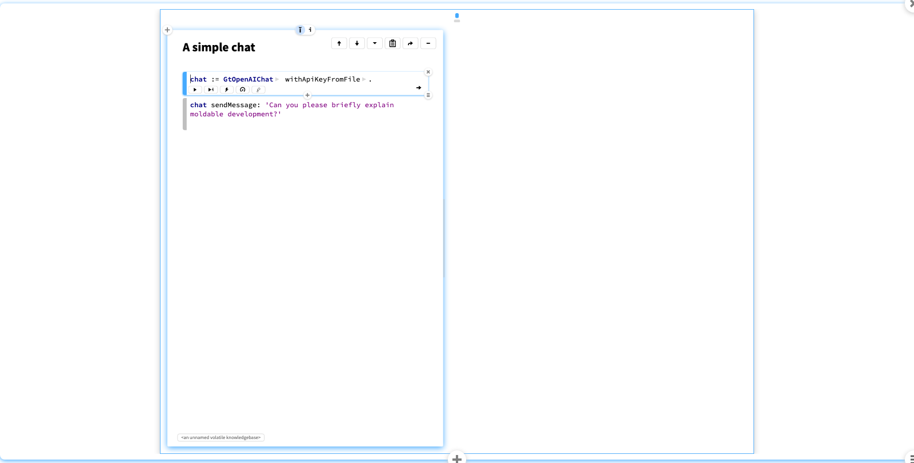
A social media post tutor
In this example, we want help from an openAI assistant to check the grammar of social media posts. We don't just want it to correct the results, but want to be able to vet and control the answers it proposes.
Here's a snippet containing a draft post we would like to check. We create a so-called “tutor” that knows the snippet and manages the chat with the openAI assistant. A tutor not only can talk to an AI, but it can send it instructions . The instructions in particular introduce the domain of social media posts.
This tutor knows the default chat action but also the specific ones to create a title or to correct grammar.
Now let's start a chat and ask the AI to correct the grammar. With a normal chat we would just get the correct text back. Here instead we get a result with a Diff view, which is more useful. This is just a simple custom view defined on the message itself.
If we like the proposal, we can accept the change with a custom action.
Once again, the point is not that we can interact with openAI assistants, but rather that we can model the interactions and mold them to our purposes.
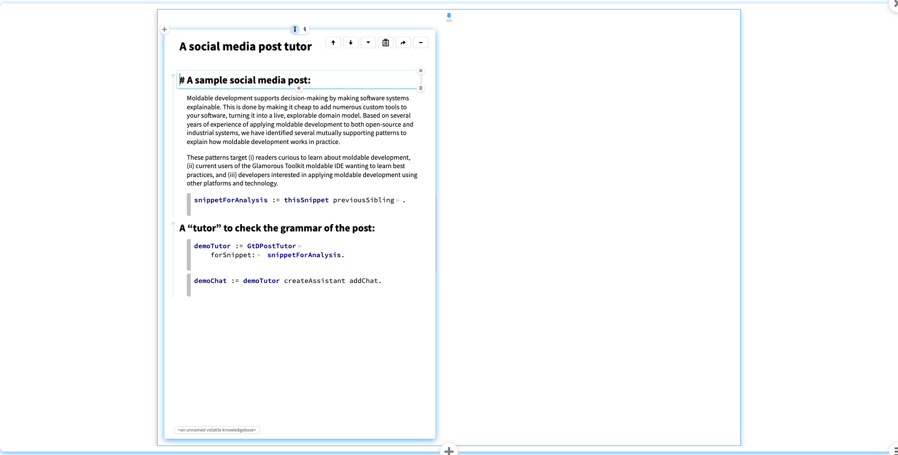
- Grab the snippet. - Inspect the tutor. - Show the Instructions with the Post component. - Show the Actions. - Start a chat. - Request it to correct the grammar. - Show the diff view. - Inspect the message and see the diff view comes from the message, with an extra annotation. - Accept the change and show the snippet update.
Large Defect Prediction Benchmark
This example was provided by Kla Tantithamthavorn. It's a large dataset of CSV files of quality metrics computed over various open-source Java projects. Here we see the lucene data file within the JIRA project.
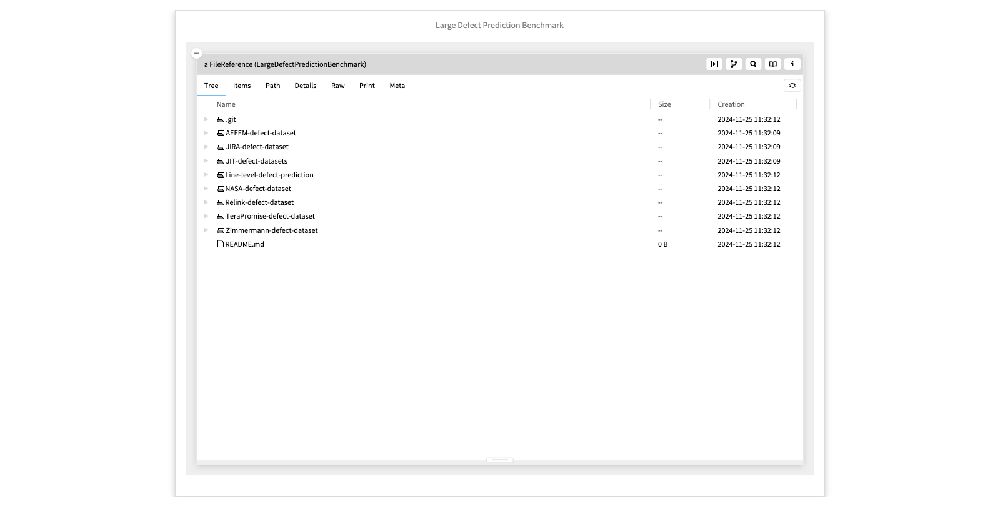
- Navigate within JIRA to the first lucene dataset.
The Lucene 2.3.0 defect dataset
Here we see the wrapped Lucene 2.3 dataset with an overview showing whether each class contains bugs classified as “real” or “heuristically” identified. We also see the lines of code and complexity of each class. We can dive into a class to see a custom view showing the other metrics.
We have an action to extract just the files flagged as buggy.
We can also apply formal concept analysis to categorize files according to which thresholds selected metrics reach, in this case short, medium or long methods, and low or high complexity. Finally we can visualize the resulting lattice, showing which combinations of properties are most common. For example, low complexity and medium-sized methods are common.
The point of this is not to show you that we discovered something new about the dataset, but rather that we can use moldable development to structure the research methodology and carry out experiments.
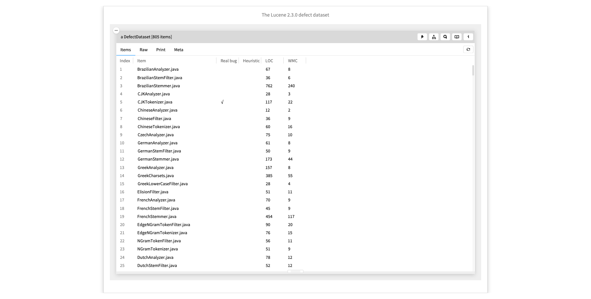
- Click on a file to see its metrics. - Click the buggy action to see just the buggy files. - Click the FCA action. - Show the Properties view. - Show the lattice. - Click on a large concept to see the details.
The Defect Prediction Benchmark example class
Many of the examples we have seen are encapsulated as example methods. These are essentially unit test methods that additionally return the object under test. This is the class containing the examples we have just seen.
When you discover interesting results, the idea is to encapsulate these as example methods so you can easily reproduce the live examples, for documentation or for further research.
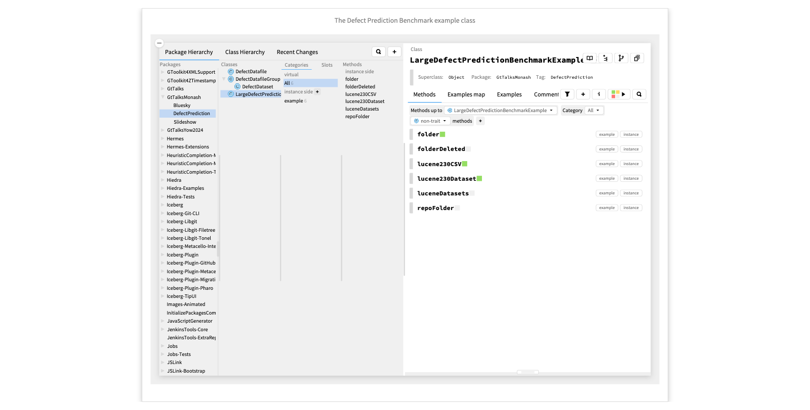
GT includes numerous R&D tools
We've already seen many examples of custom inspector views. The coder editor and even the debugger are similarly moldable. We've also see a few examples of notebook pages with code snippets, and we've seen live examples embedded in these slides.
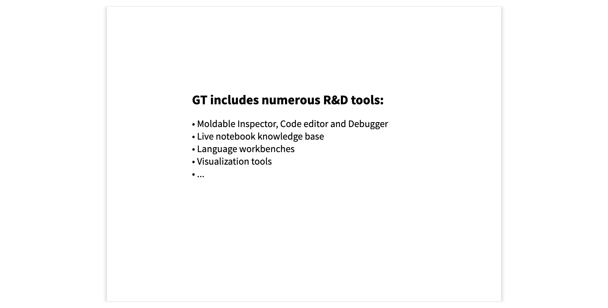
SmaCC
SmaCC is a modern parsing engine supporting a variety of parsing strategies.
Here we see a GT notebook page explaining how to query the ASTs produced by SmaCC, with the help of a live, embedded example of JavaScript code and its AST.
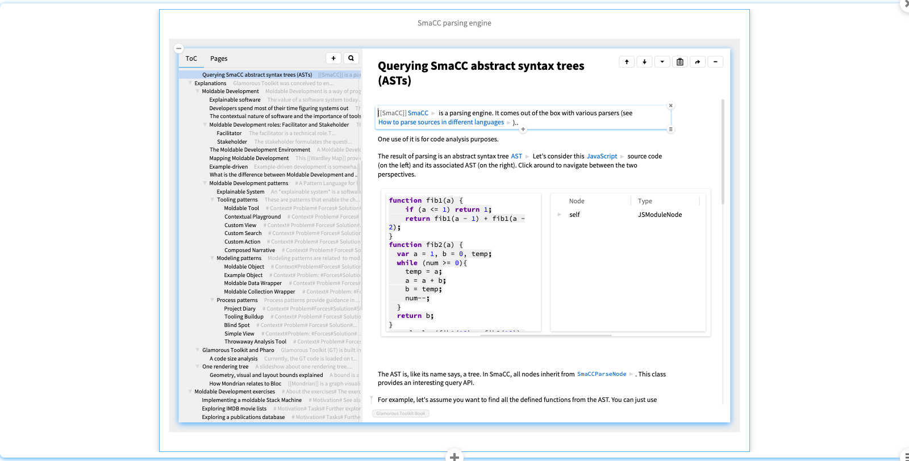
A small step interpreter built with PetitParser
PetitParser, on the other hand is a parser combinator framework that supports island parsing, which is useful for extracting selected information from source or data files.
In this example we use PetitParser to produce a small-step semantics interpreter by transforming the ASTs of a program and its continuations.
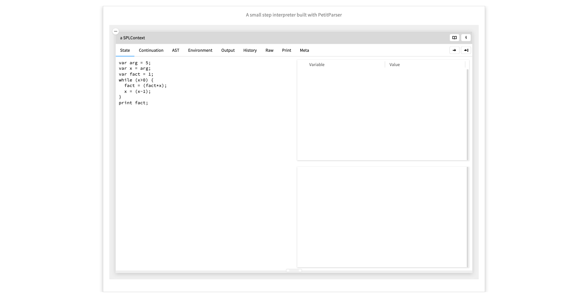
- Show some execution steps. - Run to the end. - Walk through the resulting history, with the AST view at the right.
A Mondrian reachability graph of pages in the GT book
Mondrian is a builder for graph-based visualizations.
Here we see a visualization of the notebook pages in the book itself that are reachable by following links, contrasted with standalone pages. The nodes and edges are live, so you can navigate to other domain entities.
NB: The FCA lattice we saw earlier was also built with Mondrian.
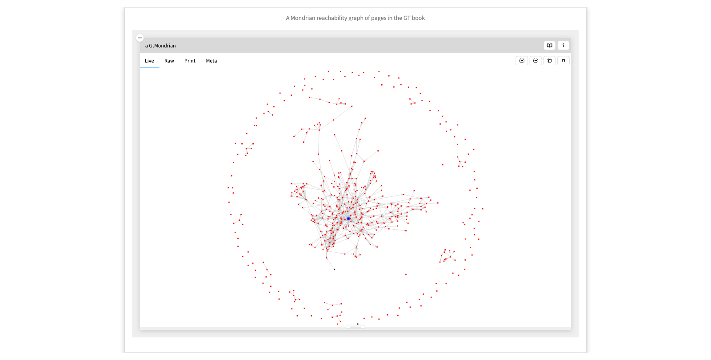
A Treemap of packages with custom views and examples
Custom tools are pervasive. This visualization shows a treemap of packages and classes in the current image. Blue classes have at least one custom view and green ones have at least one example. This shows that custom tools were heavily used to build the moldable development environment itself.
Here at the top left we see BlElement, the root of the graphical hierarchy.
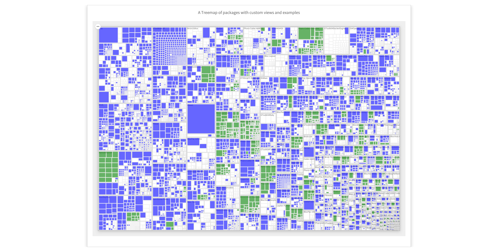
- Click on the top-left class (BlElement)
Moldable Development as a Research Methodology
To sum up, moldable development is an approach to making software systems explainable by making their domain models accessible, and augmenting them with inexpensive analysis tools.
The moldable development methodology is to iteratively model and explore software data, adding custom analysis tools as you explore.
The GT platform is open source and we host a thriving community on Discord.
Thanks for listening.
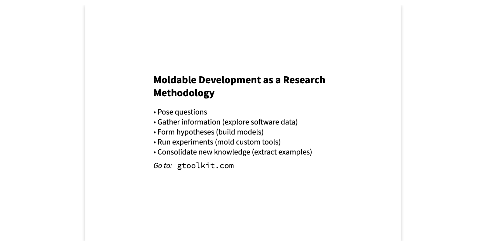
Summary
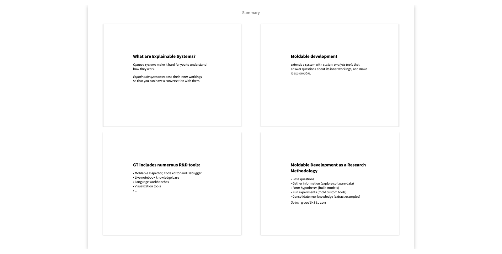